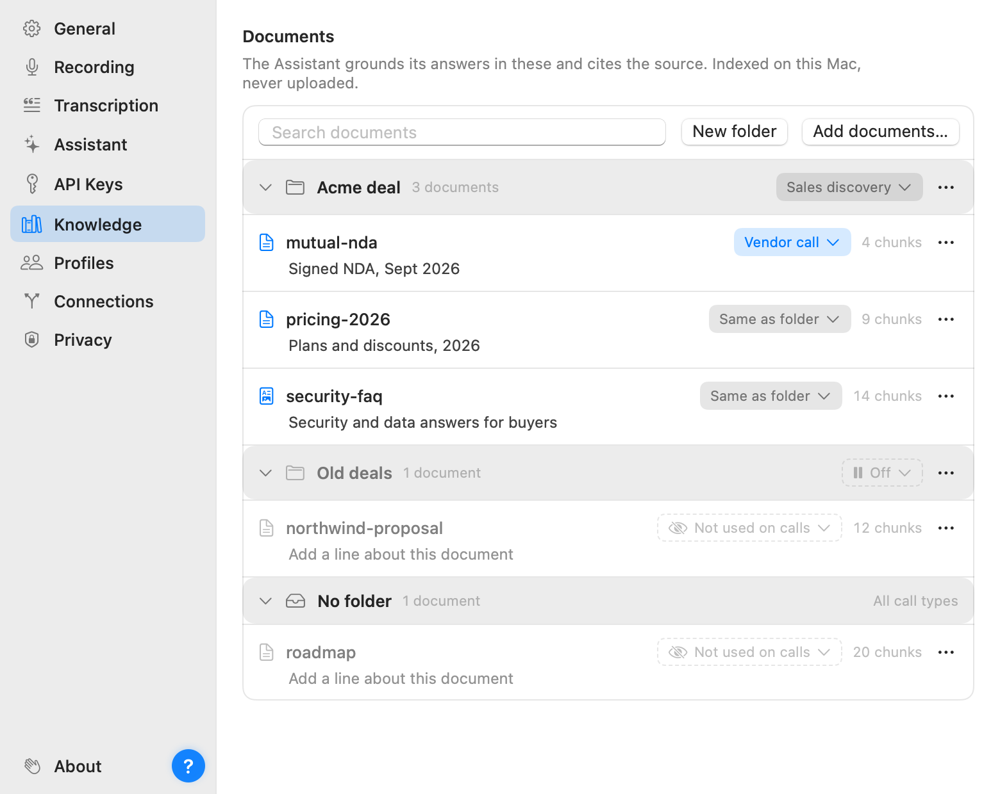

When the other side asks "what does the annual plan cost?", a generic AI can only improvise. The knowledge base is how you stop that: drop in your own documents (pricing sheets, FAQs, security one-pagers) in Settings → Knowledge, and the Assistant answers from them, citing which document it used on the card.

Documents are chunked and indexed on your Mac. During a call, Parrot picks the few passages that match what's being said right now and hands only those to the model along with the transcript. Cloud users take note: that means snippets of a matched document can be sent to your chosen provider during a call. If a document shouldn't ever leave the machine, use a local model or leave that document out.
Documents can be in most major languages, including Turkish, Dutch, Polish, Russian, Arabic, Hindi, Chinese, Japanese and Korean, as well as English and the main Western European ones. Questions in English can find answers in a document written in another Latin-alphabet language, such as Turkish or Spanish.
For a few alphabets (Arabic and Indian scripts, and Cyrillic on some Macs) macOS downloads a language model from Apple the first time you add such a document. The document works right away, but until the download finishes it only matches exact words. Your documents are never uploaded.
Group documents the way you think about them: your company basics in one folder, everything for one deal in another. Click New folder, then drag documents onto it, or use a document's … menu and Move to folder. A folder's … menu has Rename, Add documents here… and Delete folder…. Deleting a folder never deletes its documents: they move to No folder and keep working exactly as before.
Your pricing sheet belongs in sales calls; it has no business showing up in a 1:1. Each folder has a Use for setting, the pill on its row: All call types, one or more call types (your profiles), or Off, not used on calls to pause a whole folder without deleting anything. New folders start at All call types, and so does No folder, so a document you just added is used right away.
Documents follow their folder and show Same as folder. Give one document its own setting from its pill and it shows in blue: it replaces the folder's, so a deal folder can be for sales calls while its NDA is only for vendor calls.
A document the Assistant can't use on any call says Not used on calls. If you see that after updating Parrot, the document had no call types picked before, and back then that meant it was never used. Nothing changed; it's just visible now. To switch it on, click Not used on calls and choose All call types or the call types you want. Moving it into a folder isn't enough on its own, because a document keeps its own setting when it moves: choose Same as folder to have it follow the folder.
Under each document's name is a short line about what's in it, such as "Signed NDA, Sept 2026". Click it to type, or choose Edit about line. You see it in the list, and the Assistant reads it next to every passage it quotes from that document. Search documents finds documents by name or about line, ignoring capitals and accents, so "gorusme" finds "Görüşme".
Two files with the same name can't sit in different folders, because Parrot knows documents by file name. Rename one to keep both. Adding a file again into its own folder updates it and keeps its about line and Use for.